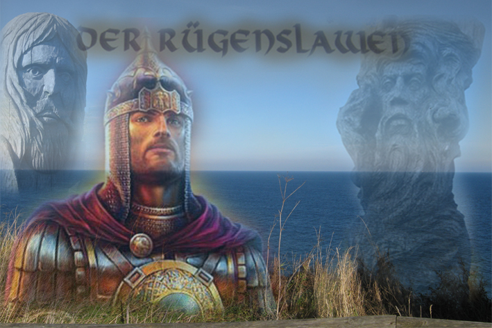
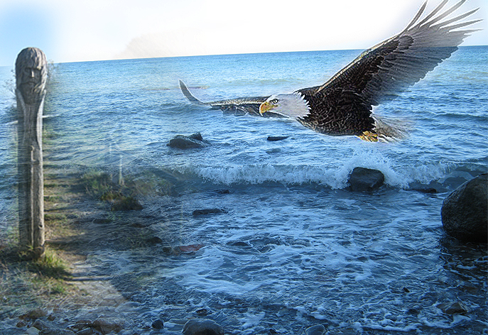
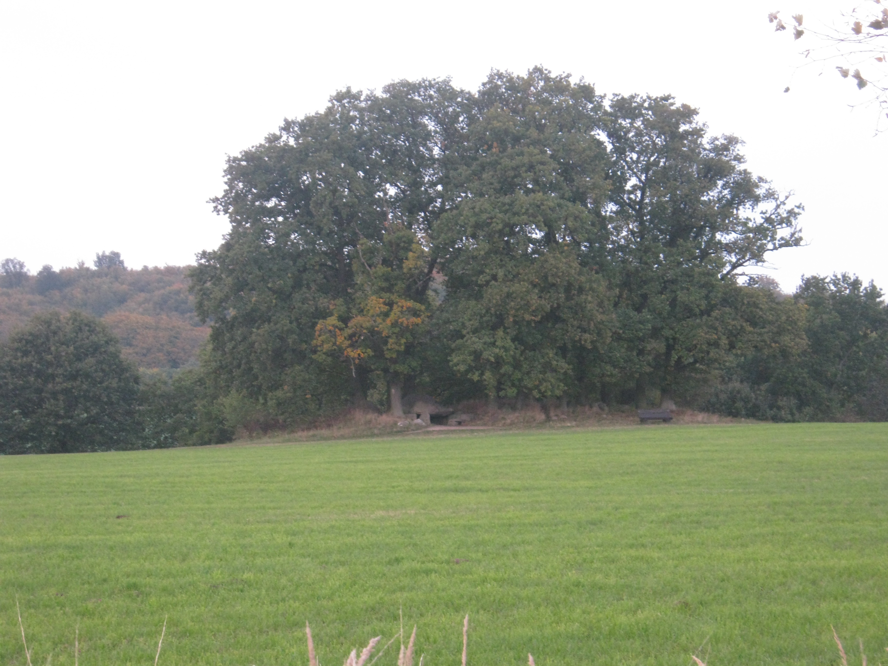
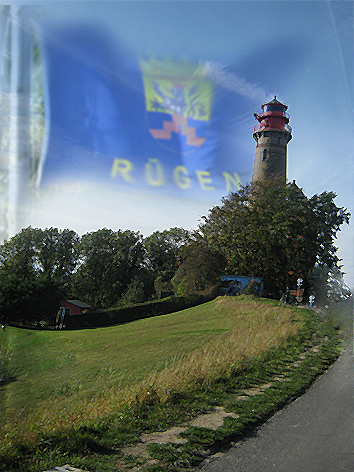

Брат Беловодья - Остров Рюген, Кап Аркона

Чтоб вновь вам у родных энергий побывать,
Вновь их почувствовать и повстречать,
В дали туманного морского альбиноса
Прообраз Свентовита увидать!
Он мощною стеною над водой стоит,
Своим мечом двуглавым мудрость Предков нам хранит!
Дух Предков вас проводит ко Святилищу - Огню…
То капище Родов из Беловодья,
Где жертвенный огонь горел родным Богам,
Собою круг, напоминая берегам,
То капище Арконы - Земной круг,
И остров весь Богам есть самый близкий друг,
Брат Беловодья, Горного Алтая,
Где суть их в матери одной,
Что есть Медведица Большая
И светит над могучей северной горой!
Когда придёте вы к Великой Кап Арконы
Зажгите в сердце Вед Священных же костёр,
И искры, будто Перуновы стрелы
Соединятся с чистою морской водой...
И возродится Родовая Сила
Какую Боги показать хотят собой,
Чтоб вновь энергий факела бы возродила,
И маяком живым святила б над Землёй!
Для душ всех спящих и унылых
Как будто колокольный звон прольёт
К родным истокам летописным
Вновь Род Великий подведёт!
Кристальная вода нам шепчет у подножья
Великой силой Прародителей-Богов,
Возле варяжских грозных берегов,
Ведь сила родовая та от Русов,
И знанья Вед хранили там от всех врагов!
За кругом круг, за жизнью жизнь,
Всё повторяется по кругу,
И только стоит дать друг другу руку,
Что хороводом нарекли,
Так зажигаются сердец огни!
А это есть любовь Ведрусов,
Которую Аркона хочет сохранить,
И ту ведическую нить,
Сквозь многие лета в сей времена впустить,
Чтобы напрясть узоров солнца кружева,
Где обережный знак два крепких Рода смог бы сохранить,
Чтобы в единую гармонию их соединить!
7521 лето (17.10.2012 год)
Е. Г. Панькова

Арконы древние сады
В седых туманах старины
Растут на острове Руяне
Где рощи родовые из Земли
Питают свои корни в Море-Океане…
Щебечут птицы
На могучих тех ветвях,
И гнёзда вьют,
Чтобы орлы рождались.
Под древом Рода Духи Предков
Небесные все свитки сторожат
О славных русских всех родах,
Чтобы в лета потомки оглянулись,
Да к Родовым Истокам возвернулись!
И Солнце ярое встаёт
Над Славною Арконой,
Где Силу Мысли Образ красотой даёт,
И в даль родную всех зовёт,
Чтоб Дух вновь возродить всех Русов!
7521 лето (14.02. 2013 г.)
Е. Г. Панькова

